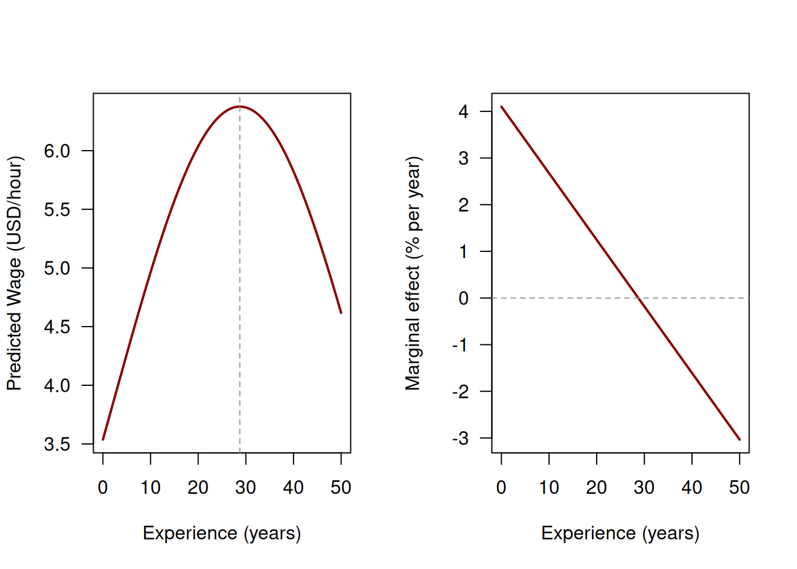
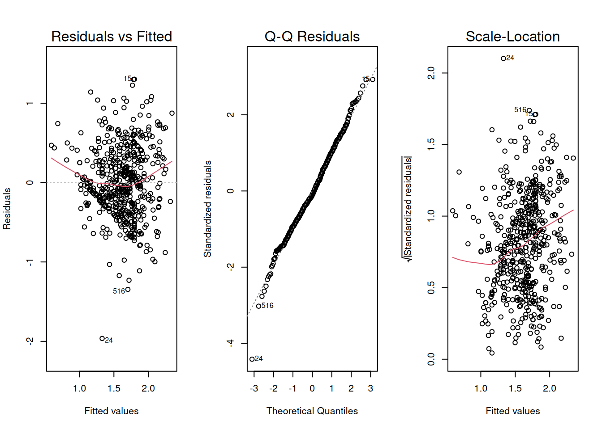
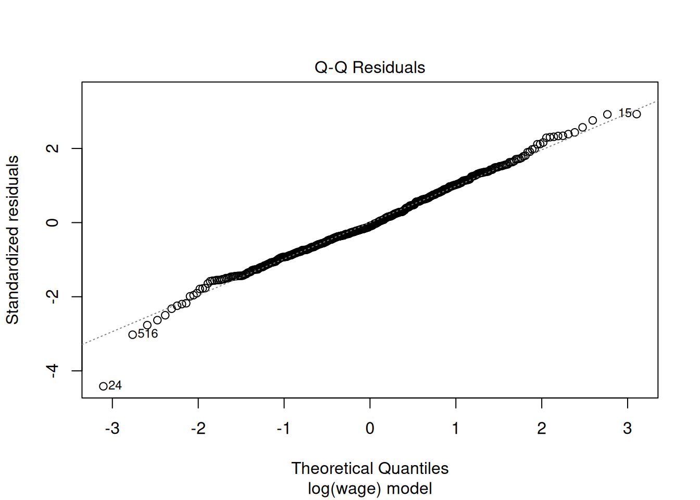
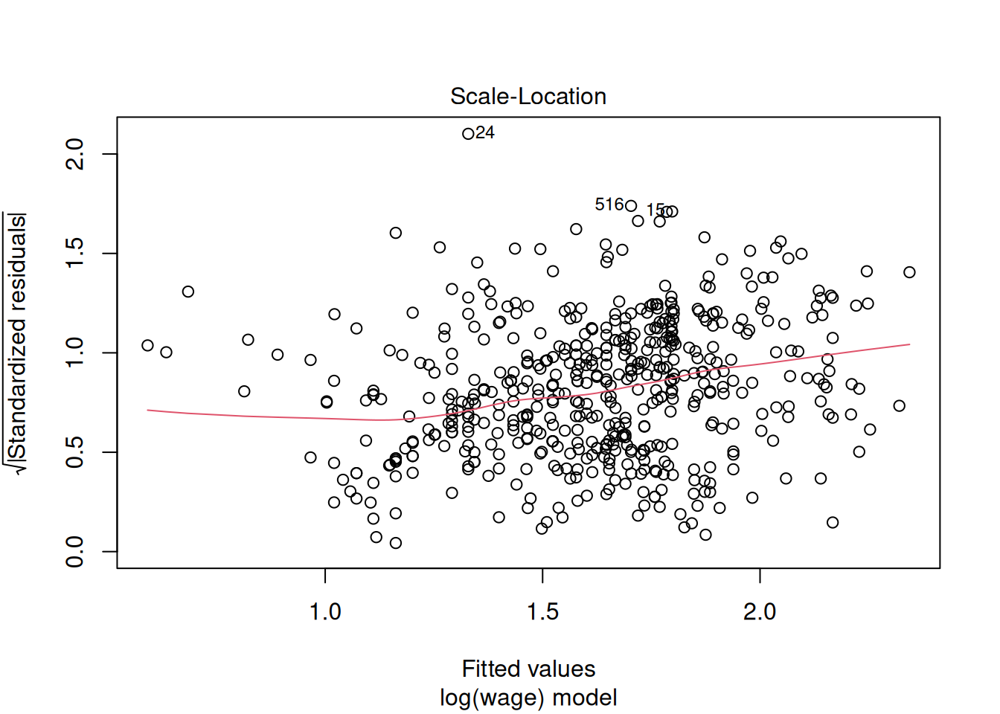

library("wooldridge")
library("kableExtra")
suppressPackageStartupMessages(library("sandwich"))
suppressPackageStartupMessages(library("lmtest"))
data("wage1")
## Refit the models from @sec-simpleLinRegCh and @sec-multipleLinRegCh
## that we reuse below (model-fit comparisons, etc.)
lm_simple <- lm(wage ~ educ, data = wage1)
lm_educ_exper <- lm(wage ~ educ + exper, data = wage1)
lm_multiple <- lm(wage ~ educ + exper + tenure, data = wage1)5 Extending and Evaluating the Linear Model
We continue with the wage1 data and the models fitted in Chapter 3 and Chapter 4. Since each chapter’s R code runs in its own fresh session, we reload the data and packages:
5.1 Extensions of the Linear Model
The multiple linear regression model Equation 4.5 is linear in the parameters \(\beta_1, \dots, \beta_K\), not necessarily in the original variables. We can use linear and non-linear transformations such as
- Transformed outcome: \(\log(Y_i)\)
- New predictor, for instance,
- by squaring: \(X_{i4} = X_{i3}^2\)
- by interactions: \(X_{i6} = \text{educ}_i \times \text{female}_i\) (Section 4.1.7)
to generate new outcome and predictor variables.
Note: The model remains linear in the parameters \(\beta_1, \dots, \beta_K,\) so all results from Section 4.1 continue to apply.
5.1.1 Log Transformations: The Mincer Equation
Motivation: The Distribution of Wages
Hourly wages are right-skewed: a few high earners pull the mean well above the median. Taking logarithms compresses the right tail and produces a more symmetric distribution.

R Code: Histograms of Wages and Log Wages
Interpretation of Log-Level Models
In a log-level model \[ \log(Y_i) = \beta_1 + \beta_2 X_i + \varepsilon_i, \] a one-unit increase in \(X_i\) changes the expected log of \(Y_i\) by \(\beta_2\). Since differences in logs are approximately relative changes, \[ \log(y_1) - \log(y_0) \approx \frac{y_1 - y_0}{y_0} \quad \text{for small changes,} \]
- a one-unit increase in \(X_i\) is associated with an approximate \(100 \cdot \beta_2\%\) change in \(Y_i\);
The Mincer Earnings Equation
The standard specification in the economics of education is the Mincer equation (Mincer 1974):
\[ \log(\text{wage}_i) = \beta_1 + \beta_2\,\text{educ}_i + \beta_3\,\text{exper}_i + \beta_4\,\text{exper}_i^2 + \varepsilon_i. \qquad(5.1)\]
Compared to the levels models in Section 4.1, this specification:
- Accommodates the right-skewed wage distribution.
- Gives \(\widehat\beta_2\) a natural interpretation as the proportional return to one year of schooling.
- Includes a quadratic in experience to capture diminishing returns to experience (see below).
lm_mincer <- lm(lwage ~ educ + exper + expersq, data = wage1)
coeftest(lm_mincer, vcov = vcovHC(lm_mincer, type = "HC3"))
t test of coefficients:
Estimate Std. Error t value Pr(>|t|)
(Intercept) 0.12799750 0.10843407 1.1804 0.2384
educ 0.09036582 0.00788877 11.4550 < 2.2e-16 ***
exper 0.04100888 0.00505273 8.1162 3.475e-15 ***
expersq -0.00071356 0.00011068 -6.4471 2.599e-10 ***
---
Signif. codes: 0 '***' 0.001 '**' 0.01 '*' 0.05 '.' 0.1 ' ' 1Interpretation of \(\widehat\beta_2\): Each additional year of education is associated with approximately a 9.0% increase in hourly wages (exact: 9.5%) — a much more interpretable and economically meaningful number than the 54 cents per hour from the simple levels model.
Polynomial Terms: Diminishing Returns to Experience
Including \(\text{exper}_i^2\) turns Equation 5.1 into a polynomial (quadratic) regression in experience:
\[\begin{align*} %Y_i %&= \beta_1 + \beta_2\,X_{i2} + \beta_3\,X_{i3} %+ \beta_4\,\overbrace{X_{i4}}^{\text{new predictor}} + %\varepsilon_i\\[2ex] \log(\text{wage}_i) &= \beta_1 + \beta_2\,\text{educ}_i + \beta_3\,\text{exper}_i + \beta_4\,\underbrace{\text{exper}_i^2}_{\text{new predictor}} + \varepsilon_i. \end{align*}\]
The above model is quadratic in \(\text{exper}_i\), but still linear in the parameters \(\beta_1, \dots, \beta_4.\)
The squared exper-predictor is simply treated as a further (here fourth) predictor \[
X_{i4} = \text{exper}_i^2
\] of a multiple linear regression model.
All OLS theory from Section 4.1 therefore still applies.
The effect of experience is then no longer constant; the marginal effect of one more year depends on how much experience a worker already has:
\[ \frac{\partial}{\partial\, \text{exper}} E\bigl(\log(\text{wage}_i) \mid \text{educ}_i, \text{exper}_i\bigr) = \beta_3 + 2\beta_4\, \text{exper}_i. \qquad(5.2)\]
With \(\beta_3 > 0\) and \(\beta_4 < 0\), wages rise with experience at a decreasing rate and peak where the marginal effect is zero, at \[ \text{exper}^* = -\beta_3/(2\beta_4). \]

R Code: Plotting the Mincer Experience Profile
b <- coef(lm_mincer)
x_seq <- seq(0, 50, length.out = 300)
log_fit <- b["(Intercept)"] + b["educ"] * mean(wage1$educ) +
b["exper"] * x_seq + b["expersq"] * x_seq^2
me <- b["exper"] + 2 * b["expersq"] * x_seq
peak_exper <- -b["exper"] / (2 * b["expersq"])
par(mfrow = c(1, 2))
plot(x_seq, exp(log_fit),
type = "l", col = "darkred", lwd = 2, las = 1,
xlab = "Experience (years)", ylab = "Predicted Wage (USD/hour)")
abline(v = peak_exper, lty = 2, col = "grey60")
plot(x_seq, 100 * me,
type = "l", col = "darkred", lwd = 2, las = 1,
xlab = "Experience (years)", ylab = "Marginal effect (% per year)")
abline(h = 0, lty = 2, col = "grey60")
par(mfrow = c(1, 1))Interpretation:
- First year of experience: about 4.1% higher wages.
- A year after 20 years of experience: only about 1.2%.
- Wages peak at approximately 29 years of experience.
This is consistent with the Mincer literature: wages rise steeply early in a career and level off later.
5.2 Detecting Potential Problems
Before interpreting or reporting a fitted model, we should check whether the model assumptions are plausible for the data at hand. Three residual-based diagnostic plots catch the most common violations.
We illustrate using the Mincer equation lm_mincer from Section 5.1.1. The plot() method for lm objects produces these plots automatically:

R Code: Residual Diagnostic Plots
Plot 1: Residuals vs. Fitted Values

R Code: Residuals vs. Fitted Values
plot(lm_mincer, which = 1, sub.caption = "log(wage) model")What to look for:
- Residuals scatter randomly around zero, no pattern → OK.
- Residuals show a systematic pattern → functional form misspecified (e.g., a missing quadratic term).
- Spread of residuals changes with fitted values → heteroskedasticity.
In our model: No strong pattern. The log transformation and experience quadratic have captured the main non-linearities. Some spread variation remains → heteroskedasticity. Residuals at small fitted values \(\widehat{Y}_i\) sit strictly above the zero line → the model may be misspecified for this part of the data.
Plot 2: Normal Q-Q

R Code: Normal Q-Q Plot
plot(lm_mincer, which = 2, sub.caption = "log(wage) model")What to look for: Points should fall close to the 45° line. Clear deviations from the 45° line indicate non-normal errors.
- Normality is not needed for the OLS estimators to be unbiased.
- But the \(t\)- and \(F\)-distributions in Equation 3.9 and Equation 4.11 are exact only if \(\varepsilon_i\) is normally distributed.
- For large \(n\), the Central Limit Theorem ensures approximate validity even without normality of \(\varepsilon_i.\) Therefore, departures matter most in small samples.
- Exception: the prediction interval in Section 5.3 relies on normality of \(\varepsilon_\text{new}\) even in large samples.
In our model: The residuals follow the line closely over most of the range. Only the lower tail shows some deviations (e.g., observation 24). With \(n = 526\), the Central Limit Theorem provides adequate coverage, and the inference results remain reliable, when based on HC3-robust standard errors.
Plot 3: Scale-Location

R Code: Scale-Location Plot
plot(lm_mincer, which = 3, sub.caption = "log(wage) model")What to look for:
- The square root of the absolute standardized residuals should be roughly flat across fitted values. A systematic pattern → heteroskedasticity.
- Standardized residuals larger than 2 (in absolute value) → possible outliers, which should be investigated (e.g., a typo in the data).
In our model: A modest upward trend, i.e., some heteroskedasticity remains even after the log transformation. This reinforces the recommendation from Section 4.1.4: always use HC3 robust standard errors. Observation 24 — already noted in Plot 2 — has the largest standardized residual (in absolute value) in the whole sample and is thus a possible outlier worth a closer look.
Diagnostic plots reveal problems; they do not fix them!
The appropriate response depends on the violation:
- heteroskedasticity → robust SEs
- misspecified model → transform predictors or add polynomial terms
- outliers → investigate individual observations
5.3 Prediction vs. Inference
Linear regression serves two distinct purposes, each with its own target and its own measure of uncertainty:
-
Inference on parameters: By how much does education raise wages on average?
- Target: E.g. the population parameter \(\beta_2\).
- Relevant uncertainty: \(\widehat{\operatorname{SE}}(\widehat\beta_2 \mid X)\).
-
Prediction: What wage would we expect for a specific new worker?
- Target: the wage \(Y_\text{new}\) of a new worker with predictor values \(x_{\text{new},2}, \dots, x_{\text{new},K}\).
- Relevant uncertainty: combines the uncertainties of the estimators \(\widehat\beta_1, \dots,\widehat\beta_K\) and the inherent randomness of \(Y_\text{new}\) around its conditional mean \(m(x_\text{new}),\) due to new error term \(\varepsilon_\text{new}.\)
5.3.1 Assessing Model Fit: \(R^2\) and Adjusted \(R^2\)
Before we quantify the uncertainty of individual predictions, a first question is how well an estimated model predicts all the observed outcome values \(Y_1,\dots,Y_n\) in our sample.
Recall the fitted values \[\begin{align*} \widehat{Y}_i & = \widehat{m}(x_i)\\[2ex] & = \widehat\beta_1 + \widehat\beta_2\, X_{i2} + \dots + \widehat\beta_K\, X_{iK}. \end{align*}\]
and residuals \[ \widehat{\varepsilon}_i = Y_i - \widehat{Y}_i, \] from Section 3.2.2.
We could ask: How well does education alone, i.e., our simple linear regression model in Equation 3.1
\[
Y_i = \beta_1 + \beta_2 \underbrace{X_i}_{=\texttt{educ}_i} + \varepsilon_i, \quad i = 1, \dots, n,
\] predict the observed wages \(Y_1,\dots,Y_n\)?
We measure this by decomposing the total variation in \(Y_1,\dots,Y_n\) into an explained and an unexplained (residual) part:
\[ \underbrace{\sum_{i=1}^{n}(Y_i - \bar Y)^2}_{\text{TSS}} = \underbrace{\sum_{i=1}^{n}(\widehat Y_i - \bar Y)^2}_{\text{ESS}} + \underbrace{\sum_{i=1}^{n} \widehat{\varepsilon}_i^2}_{\text{RSS}} \qquad(5.3)\]
\[\begin{align*} \Leftrightarrow\; \underbrace{\frac{1}{n}\sum_{i=1}^{n}(Y_i - \bar Y)^2}_{\text{Variance of $Y_1,\dots,Y_n$}} &= \underbrace{\frac{1}{n}\sum_{i=1}^{n}(\widehat Y_i - \bar Y)^2}_{\text{Variance of $\widehat{Y}_1,\dots,\widehat{Y}_n$}} + \underbrace{\frac{1}{n}\sum_{i=1}^{n} \widehat{\varepsilon}_i^2}_{\text{Variance of $\widehat{\varepsilon}_1,\dots,\widehat{\varepsilon}_n$}}, \end{align*}\]
where
- TSS is the Total Sum of Squares,
- ESS is the Explained Sum of Squares, and
- RSS is the Residual Sum of Squares.
The coefficient of determination \(R^2\) is the fraction of total variation explained by the model:
\[ R^2 = \frac{\text{ESS}}{\text{TSS}} = 1 - \frac{\text{RSS}}{\text{TSS}}, \qquad 0 \leq R^2 \leq 1. \qquad(5.4)\]
RSS <- sum(residuals(lm_simple)^2)
TSS <- sum((wage1$wage - mean(wage1$wage))^2)
R2 <- 1 - RSS / TSS
c(R2_by_hand = R2,
R2_by_R = summary(lm_simple)$r.squared)R2_by_hand R2_by_R
0.1647575 0.1647575 Interpretation: \(R^2 = 0.165\) means that the simple linear regression model with the predictor education explains about 16.5% of the variation in the observed wages \(Y_1,\dots,Y_n.\) That is, education is informative about wages, but many other factors matter too.
Comparing the Model Fits of Models with Different Numbers of Predictors
\(R^2\) from Equation 5.4 never decreases when a predictor is added, even if that predictor is pure noise. Comparing \(R^2\) across models with different numbers of predictors is therefore misleading.
Solution: The adjusted \(R^2\) penalizes for large numbers of parameters \(K\):
\[ \bar R^2 = 1 - \frac{\text{RSS}/(n-K)}{\text{TSS}/(n-1)} = 1 - (1 - R^2)\frac{n-1}{n-K}. \qquad(5.5)\]
In fact, \(\bar R^2\) can decrease when adding poor predictors.
| (1) | (2) | (3) | |
|---|---|---|---|
| Coefficients | |||
| (Intercept) | -0.905 | -3.391 | -2.873 |
| educ | 0.541 | 0.644 | 0.599 |
| exper | — | 0.070 | 0.022 |
| tenure | — | — | 0.169 |
| Model Fit Statistics | |||
| R2 | 0.165 | 0.225 | 0.306 |
| AdjR2 | 0.163 | 0.222 | 0.302 |
R Code: Table of Coefficient Estimates and Fit Statistics
## compare three different models (lm_simple: K=2, lm_educ_exper: K=3, lm_multiple: K=4;
## all three refitted at the top of this chapter)
## Row names of the coefficient block. Indexing coef(...) by these names
## automatically inserts NA for coefficients a model does not contain.
nms <- c("(Intercept)", "educ", "exper", "tenure")
coef_tab <- cbind(coef(lm_simple)[nms],
coef(lm_educ_exper)[nms],
coef(lm_multiple)[nms])
coef_tab <- round(coef_tab, 3)
rownames(coef_tab) <- nms
fit_tab <- rbind(
R2 = c(summary(lm_simple)$r.squared,
summary(lm_educ_exper)$r.squared,
summary(lm_multiple)$r.squared),
AdjR2 = c(summary(lm_simple)$adj.r.squared,
summary(lm_educ_exper)$adj.r.squared,
summary(lm_multiple)$adj.r.squared)
)
fit_tab <- round(fit_tab, 3)
tab <- rbind(coef_tab, fit_tab)
colnames(tab) <- c("(1)", "(2)", "(3)")
options(knitr.kable.NA = "—")
kbl(tab, align = "r") |>
kable_styling(bootstrap_options = c("striped", "hover")) |>
pack_rows("Coefficients", 1, 4) |>
pack_rows("Model Fit Statistics", 5, 6)- Adding experience raises \(R^2\) from 0.165 to 0.225, and adding tenure raises it further to 0.306.
- The adjusted \(R^2\) rises as well.
A further note on \(R^2\) comparisons.
The Mincer model with \(\log(Y_i)\) outcomeslm(lwage ~ educ + exper + expersq) from Section 5.1.1 has \(R^2 = 0.30,\) while the levels model lm(wage ~ educ + exper + expersq) has \(R^2 = 0.27.\)
‼️ These two \(R^2\)-statistics are not directly comparable, even though the predictors in both models are exactly the same. The reason: their outcome variables differ, \(\log(Y_i)=\log(\text{wage}_i)\) vs. \(Y_i=\text{wage}_i,\) so the TSS in the denominator of \(R^2\) differs too. We would be comparing apples and oranges.
5.3.2 Confidence Intervals for the Conditional Mean Function
The conditional mean \[\begin{align*} m(x_\text{new}) & = E(Y_\text{new} \mid x_\text{new})\\[2ex] &= \beta_1 + \beta_2\, x_{\text{new},2} + \dots + \beta_K\, x_{\text{new},K} \end{align*}\] i.e., the average wage of all workers with characteristics \[ x_\text{new}=(x_{\text{new},2},\, \dots,\, x_{\text{new},K}) \] is estimated by \[ \widehat{m}(x_\text{new}) = \widehat\beta_1 + \widehat\beta_2\, x_{\text{new},2} + \dots + \widehat\beta_K\, x_{\text{new},K}. \]
The estimator \(\widehat{m}(x_\text{new})\) varies around the unknown true value \(m(x_\text{new})\) from sample to sample because the estimated coefficients \(\widehat{\beta}_1,\dots,\widehat{\beta}_K\) do.
For the simple regression model, \[ Y_i=\underbrace{\beta_1+\beta_2X_i}_{=m(X_i)}+\varepsilon_i, \] the variance of \(\widehat{m}(x_\text{new})\) is \[ \operatorname{Var}(\widehat{m}(x_\text{new}) \mid X) = \sigma^2 \left( \frac{1}{n} + \frac{(x_\text{new} - \bar X)^2}{\sum_{i=1}^{n}(X_i - \bar X)^2} \right). \qquad(5.6)\]
That is: * This variance is smallest at \(x_\text{new} = \bar X\) and grows as \(x_\text{new}\) moves away from the center of the data. This is why the confidence band in Figure 3.1 fans out at both ends. * The variance shrinks as the sample size \(n\) grows.
The variance formula in Equation 5.6 cannot be computed directly, since we usually do not know \(\sigma^2=\operatorname{Var}(\varepsilon_i).\) Under homoskedasticity, we can estimate \(\sigma^2\) by \(\widehat\sigma^2 = \frac{1}{n-K}\sum_{i=1}^n\widehat\varepsilon_i^2,\) which yields the feasible estimator \[ \widehat{\operatorname{Var}}(\widehat{m}(x_\text{new}) \mid X) = \widehat\sigma^2 \left( \frac{1}{n} + \frac{(x_\text{new} - \bar X)^2}{\sum_{i=1}^{n}(X_i - \bar X)^2} \right). \]
For the multiple regression model, \[ Y_i=\underbrace{\beta_1+\beta_2X_{i2} + \dots + \beta_K X_{iK}}_{m(X_i)} + \varepsilon_i, \] the formula for \[ \widehat{\operatorname{Var}}(\widehat{m}(x_\text{new}) \mid X) \] is longer but the logic is the same.
The \((1-\alpha)\cdot 100\%\) confidence interval for the conditional mean is given by
\[ \widehat{m}(x_\text{new}) \;\pm\; t_{n-K,\,1-\alpha/2}\cdot \sqrt{\widehat{\operatorname{Var}}(\widehat{m}(x_\text{new}) \mid X)}. \qquad(5.7)\]
5.3.3 Confidence Intervals for a Single Parameter
This is the same idea as Equation 3.10 for the simple regression model, now generalized to \(K\) parameters. A \((1-\alpha)\cdot 100\%\) confidence interval for a single coefficient \(\beta_k\) is
\[ \widehat{\beta}_k \;\pm\; t_{n-K,\,1-\alpha/2}\cdot \widehat{\operatorname{SE}}(\widehat\beta_k \mid X). \qquad(5.8)\]
5.3.4 Prediction Interval for a New Observation
The second target is a new individual outcome \(Y_\text{new} = m(x_\text{new}) + \varepsilon_\text{new}\). Its prediction error is
\[ Y_\text{new} - \widehat Y_\text{new} = \underbrace{m(x_\text{new}) - \widehat Y_\text{new}}_{\text{estimation error}} + \underbrace{\varepsilon_\text{new}}_{\text{irreducible error}}. \]
The new worker’s error \(\varepsilon_\text{new}\) is independent of the sample used to estimate the coefficients, so the two variances add up:
\[ \operatorname{Var}(Y_\text{new} - \widehat Y_\text{new} \mid X) = \sigma^2 + \operatorname{Var}(\widehat Y_\text{new} \mid X). \qquad(5.9)\]
- The extra \(\sigma^2\) in Equation 5.9 — absent from Equation 5.6 — reflects the irreducible randomness of the individual outcome.
- A \(95\%\) prediction interval is therefore always wider than the confidence interval for the mean.
- Unlike the confidence interval, the prediction interval additionally relies on the errors being (approximately) normally distributed — the Central Limit Theorem does not help here, since \(\varepsilon_\text{new}\) is a single draw, not an average:
\[ \widehat Y_\text{new} \;\pm\; t_{n-K,\,0.975}\cdot \sqrt{\widehat\sigma^2 + \widehat{\operatorname{SE}}(\widehat Y_\text{new} \mid X)^2}. \qquad(5.10)\]
Going Deeper: The Intervals in Matrix Form
This box requires matrix algebra; see Appendix A.
With \(x_\text{new} = (1, x_{\text{new},2}, \dots, x_{\text{new},K})^\top\) and the design matrix \(X\) from Section 4.1.3, the fitted value is \(\widehat Y_\text{new} = x_\text{new}^\top\widehat\beta\) and
\[ \operatorname{Var}(\widehat Y_\text{new} \mid X) = \sigma^2\, x_\text{new}^\top (X^\top X)^{-1} x_\text{new}. \]
For the simple regression, this expression reduces to Equation 5.6.
Application: Benchmarking a Salary Offer
An HR department plans to hire a college graduate (16 years of education) with 5 years of work experience and wants to know which hourly wage is in line with the market. We use the Mincer model from Section 5.1.1 and transform the predictions back from log wages to dollars:
new_worker <- data.frame(educ = 16, exper = 5, expersq = 25)
ci <- predict(lm_mincer, newdata = new_worker, interval = "confidence")
pi <- predict(lm_mincer, newdata = new_worker, interval = "prediction")
cat("Point estimate (USD/hour): ", round(exp(ci[,"fit"]), 2), "\n")Point estimate (USD/hour): 5.82 cat("95% CI for mean wage (USD/hour): [",
round(exp(ci[,"lwr"]), 2), ",", round(exp(ci[,"upr"]), 2), "]\n")95% CI for mean wage (USD/hour): [ 5.43 , 6.23 ]cat("95% PI for individual wage (USD/hour): [",
round(exp(pi[,"lwr"]), 2), ",", round(exp(pi[,"upr"]), 2), "]\n")95% PI for individual wage (USD/hour): [ 2.42 , 14.01 ]The two intervals answer two different HR questions:
- “What do workers with this profile typically earn?” The confidence interval [$5.43, $6.23] is narrow: we can estimate the typical wage of all workers with this profile quite precisely.1 This is the relevant benchmark when budgeting salaries for many similar hires.
- “What might this particular candidate earn elsewhere?” The prediction interval [$2.42, $14.01] is about 15 times as wide: predicting one individual’s wage is far less certain, because wages vary enormously among workers with identical observable characteristics. This is the relevant range for negotiating an individual offer.
1 Strictly speaking, transforming back from log wages gives the median rather than the mean wage of workers with this profile.
As \(n \to \infty\), the CI width \(\to 0\) — we eventually learn \(\beta\) exactly. The PI width does not shrink to zero: the irreducible \(\sigma^2\) term in Equation 5.9 remains even in infinite samples. No matter how much data we have, an individual’s wage contains randomness that no model can eliminate.
The figure below visualizes both bands along the education dimension, holding exper at its sample mean:

R Code: Plotting the Confidence and Prediction Bands
educ_seq <- seq(0, 18, length.out = 200)
exper_bar <- mean(wage1$exper)
nd <- data.frame(educ = educ_seq,
exper = exper_bar,
expersq = exper_bar^2)
ci_band <- predict(lm_mincer, newdata = nd, interval = "confidence")
pi_band <- predict(lm_mincer, newdata = nd, interval = "prediction")
plot(wage1$educ, wage1$lwage,
col = adjustcolor("steelblue", alpha.f = 0.3),
pch = 16, las = 1,
xlab = "Education (years)", ylab = "Log Wage")
polygon(c(educ_seq, rev(educ_seq)),
c(pi_band[,"lwr"], rev(pi_band[,"upr"])),
col = adjustcolor("lightcoral", alpha.f = 0.25), border = NA)
polygon(c(educ_seq, rev(educ_seq)),
c(ci_band[,"lwr"], rev(ci_band[,"upr"])),
col = adjustcolor("darkred", alpha.f = 0.35), border = NA)
lines(educ_seq, ci_band[,"fit"], col = "darkred", lwd = 2)
legend("topleft",
legend = c("Fitted mean", "95% CI (mean)", "95% PI (individual)"),
col = c("darkred",
adjustcolor("darkred", alpha.f = 0.5),
adjustcolor("lightcoral", alpha.f = 0.5)),
lwd = c(2, 8, 8), bty = "n")5.4 What Does \(\widehat\beta_2\) Really Tell Us?
We now have a complete regression toolkit. The Mincer equation from Section 5.1.1 estimates that each additional year of education is associated with approximately a 9% increase in hourly wages, controlling for experience. The inference tools from Section 4.1.5 tell us this estimate is statistically precise, and the model fits the data reasonably well (\(R^2 = 0.30\)).
So — does education make workers more productive and therefore better paid? Can a student reading this script expect a 9% wage premium for each additional year they spend in university?
Not necessarily. The OLS estimate \(\widehat\beta_\text{educ} = 0.09\) measures a statistical association, not a causal effect. To see why, consider two scenarios that are observationally indistinguishable with our data:
- Scenario A — education is causal: More education raises productivity, which raises wages. The 9% estimate reflects the true causal return.
- Scenario B — ability bias: Some workers are more able — they learn faster, work harder, think more creatively. High-ability workers both choose more education (less costly or more rewarding for them) and earn higher wages (for reasons unrelated to education). The regression then picks up the combined effect of education and the underlying ability differences between workers.
Under Scenario B, the omitted variable ability is correlated with both
-
educ— more able workers acquire more education, and -
wage— more able workers earn more,
so \(E(\varepsilon_i \mid \text{educ}_i) \neq 0\) — Assumption 2 (exogeneity) is violated — and, by the OVB formula Equation 4.4,
\[ E(\widehat\beta_\text{educ} \mid X) = \beta_\text{educ}^\text{causal} + \underbrace{\beta_\text{ability} \cdot \widehat\delta_\text{educ}}_{\text{ability bias} > 0}. \]
- This argument suggests OLS overstates the causal return to education.
- Surprisingly, studies exploiting natural experiments — e.g., compulsory schooling laws that forced some students to stay in school longer — typically find causal returns as large as or even larger than the OLS estimates (Card 1999).
- Ability bias is not the only problem: errors in reported years of education bias OLS downward, and returns to education may differ across people.
Lesson: the direction and size of the bias are empirical questions that OLS alone cannot answer.
Prediction vs. causation. Crucially, none of this undermines the model’s predictive usefulness. Even if \(\widehat\beta_\text{educ}\) is biased as a causal estimate, the Mincer equation still produces good predictions of wages for workers similar to those in the sample. The confidence and prediction intervals in Section 5.3 remain valid. Bias and prediction accuracy are distinct properties of an estimator.
Business Takeaway: Does the Decision Need a Prediction or a Causal Effect?
Before acting on a regression, ask what kind of answer the decision requires.
- Budgeting salaries for next year’s hires needs a good prediction — OLS is well suited, even if \(\widehat\beta_\text{educ}\) is not causal.
- Deciding whether to fund employees’ degree programs needs the causal effect of education on wages (or productivity) — here, the OLS estimate may be misleading.
What We Have and What We Are Missing
| Prediction | Causal inference | |
|---|---|---|
| Goal | Forecast \(Y_\text{new}\) | Estimate \(\partial Y / \partial X\) |
| Key assumption | Stable data-generating process | Exogeneity / no OVB |
| OLS sufficient? | Often yes | Only under strict conditions |
| Question answered | “What wage would this worker likely earn?” | “What wage would this worker earn with one more year of education?” |
Answering causal questions requires additional assumptions and methods beyond OLS.
The returns-to-education question has motivated decades of empirical research and methodological innovation: instrumental variables, regression discontinuity, difference-in-differences. These tools go beyond this chapter.
References
Card, David. 1999. “The Causal Effect of Education on Earnings.” In Handbook of Labor Economics, edited by Orley Ashenfelter and David Card, 3A:1801–63. Amsterdam: Elsevier. https://doi.org/10.1016/S1573-4463(99)03011-4.
Mincer, Jacob. 1974. Schooling, Experience, and Earnings. New York: National Bureau of Economic Research.